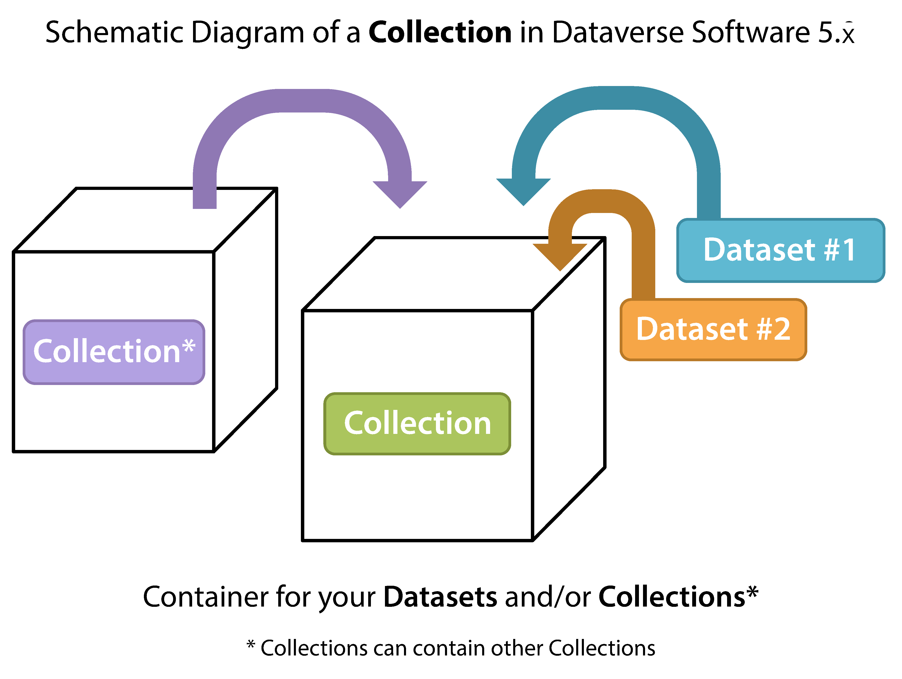

A dataverse is a container for datasets (research data and other products of research, code, documentation, and metadata) and other dataverses, which can be setup for individual researchers, departments, journals and organizations.

Submit a request to create a lab, department or center dataverse. Please email libra@virginia.edu.